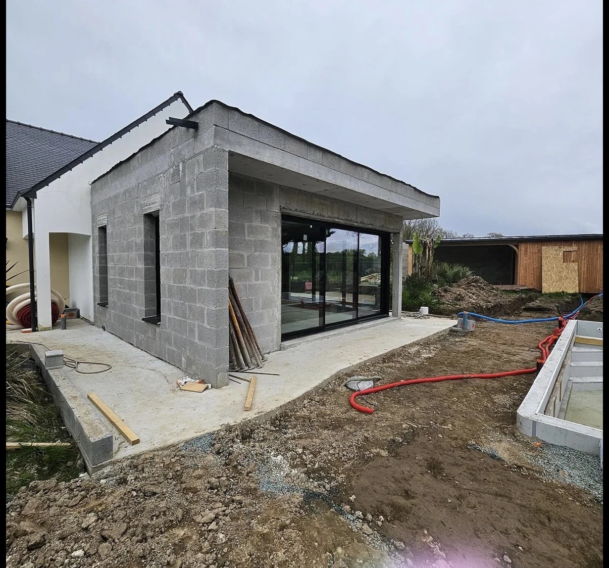

Regarder librement
Rotation complète autour du point de vue, avec inclinaison haut/bas.

Glissez avec le doigt, regardez autour de vous, zoomez et passez de l’avant aux travaux puis au projet final. Le moteur privilégie l’image photographique, pas une maquette 3D visible.
Le panorama est projeté autour d’une caméra virtuelle. Le rendu reste photographique pendant que vous tournez réellement à 360°, regardez vers le haut ou le sol et zoomez.
Terrassement, maçonnerie, réseaux et engins en activité.
Expérience de concept photoréaliste : elle illustre un chantier résidentiel et les métiers ORIS BAT PRO, sans être présentée comme la captation d’un chantier client réel.
Rotation complète autour du point de vue, avec inclinaison haut/bas.
Avant, travaux et projet final se fondent l’un dans l’autre.
La caméra se déplace automatiquement et déroule l’évolution du chantier.
Points de vue et hotspots mettent en avant les métiers et l’organisation du chantier.
Votre terrain sera différent : envoyez votre commune, les contraintes et quelques photos pour préparer le projet réel.